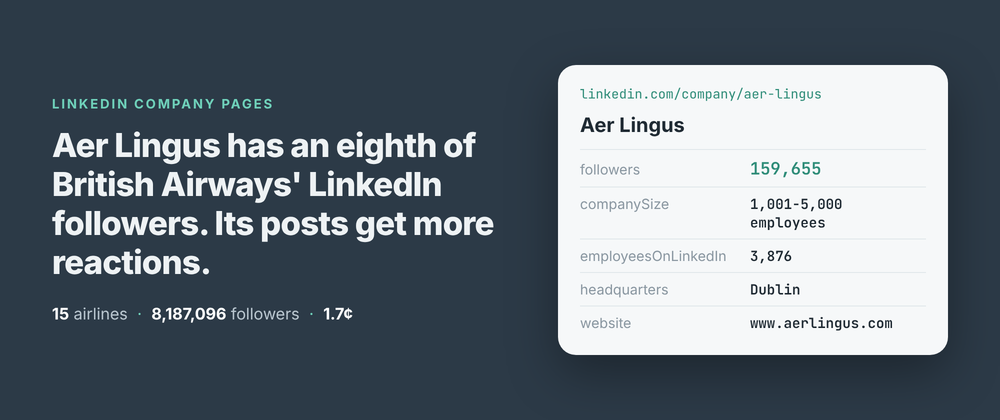
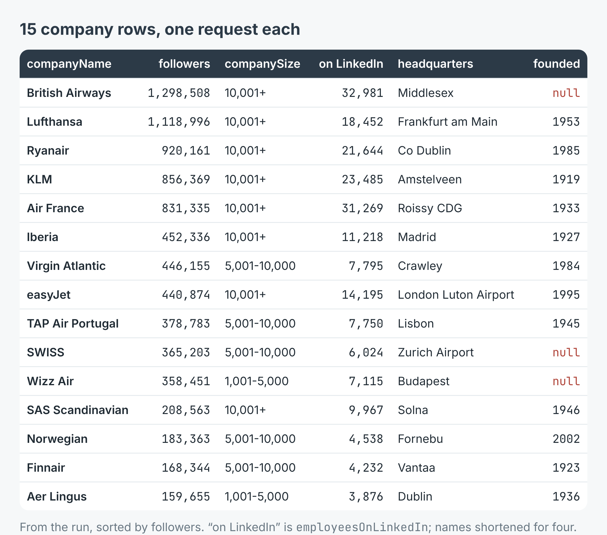
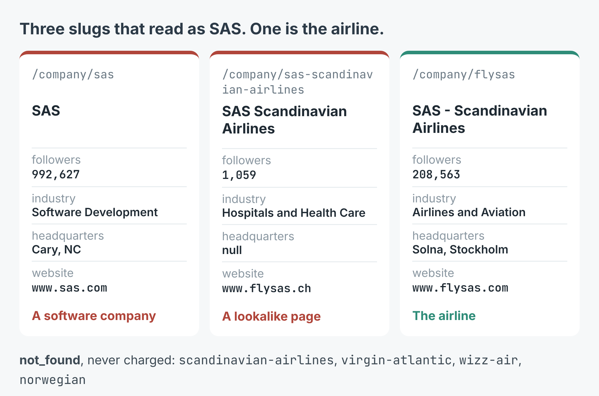
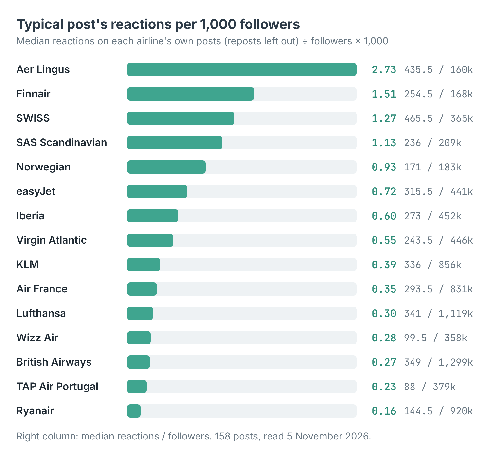

How to get LinkedIn follower counts for a list of companies (15 European airlines)
I wrote this with an AI assistant. The runs, numbers and code are real, and I checked them.

British Airways has 1,298,508 followers on LinkedIn. Aer Lingus has 159,655, about an eighth as many. Yet Aer Lingus's typical post drew more reactions: a median of 435.5, against 349 for British Airways.
I only saw that because I had both numbers in one table, for fifteen airlines, read on the same morning. That's the job here: a list of companies in, one row per company out, with the follower count, the declared size, the headquarters and the latest posts.
Fifteen rows, one request each
I build and run a LinkedIn company scraper on Apify. It reads the page LinkedIn shows a logged-out visitor at linkedin.com/company/<slug>, so there's no login, no cookie and no API key. One page a company carries the record and its latest posts, about ten of them.
I gave it fifteen European airlines on the morning of 5 November, with outputFormat set to company so each airline came back as one row with its posts nested inside. In Node:
import { ApifyClient } from 'apify-client';
const client = new ApifyClient({ token: process.env.APIFY_TOKEN });
const run = await client.actor('simple.actor/linkedin-company-posts')
.call({ companies: ['british-airways', 'lufthansa', 'klm'],
outputFormat: 'company' });
const { items } = await client.dataset(run.defaultDatasetId)
.listItems();
for (const c of items) {
if (c.error) { console.warn(c.companySlug, c.error); continue; }
console.log(c.companyName, c.followers, c.companySize);
}
The first run took 86 seconds for fifteen slugs. Twelve were read. Three came back as not_found rows. Between them, the fifteen airlines I ended up with have 8,187,096 followers.

The fifteen company records, from British Airways' 1,298,508 followers down to Aer Lingus's 159,655.
Each row also carries the tagline, the full About-us text, the logo, the website, the industry, the organisation type, the specialities and a postal address. Two size columns sit side by side and mean different things. companySize is the band the company declares, "10,001+ employees" for British Airways. employeesOnLinkedIn is how many profiles LinkedIn ties to it: 32,981.
The slug is not the brand name
Three of my first fifteen guesses were wrong in the safe way. virgin-atlantic, wizz-air and norwegian have no company page, so each came back as a not_found row and wasn't charged. The real ones are virgin-atlantic-airways, wizzair and norwegian-air-shuttle.
The fourth was wrong in the expensive way. sas is a real page. It belongs to SAS the software company in Cary, North Carolina, with 992,627 followers, and it came back as a normal, charged row. If I'd only been reading the follower column, Scandinavian Airlines would have ranked third, ahead of Ryanair.
So I ran a second batch of eight candidate slugs. That one took 33 seconds. sas-scandinavian-airlines turned out to be a lookalike page with 1,059 followers, filed under Hospitals and Health Care. flysas is the airline: 208,563 followers, Airlines and Aviation, Solna.

Three slugs, three different companies. The industry and website columns are what gave the first two away.
The check that catches this costs nothing: look at industry and website before you trust the follower count.
Followers don't predict reactions
With the posts in the same row, I divided each airline's median reactions per post by its followers. I left out reposts, because their reactions belong to whoever wrote the original, and posts where LinkedIn showed no count.

Reactions on a typical post for every 1,000 followers, from 158 posts.
Aer Lingus gets 2.73 reactions per 1,000 followers. Ryanair, with 920,161 followers, gets 0.16, seventeen times fewer. The two largest pages, British Airways and Lufthansa, sit near the bottom at 0.27 and 0.30.
How often they post varies just as much. KLM's latest 10 posts cover 9.8 days, about seven a week. Aer Lingus's 11 go back 149 days, and Virgin Atlantic's 10 go back 356 days, nearly a year. A page that posts once a month may simply be posting its best material. I can't tell that from ten posts, but I can see which pages to look at more closely.
What it cost
The scraper charges $0.0010 per company read on Apify's Free and Starter plans, $0.0009 on Scale and $0.00085 on Business and above. Posts are free, and a company that can't be read isn't charged.
Across both runs, 17 companies were read: $0.017 on the Free plan. Two of those were the wrong SAS pages, so the fifteen airlines themselves come to $0.015. The six not_found slugs cost nothing.
Where the rows need a second look
The names arrive as LinkedIn writes them, and once as LinkedIn encodes them. Ryanair's came back as Ryanair - Europe's Favourite Airline, with the apostrophe still an HTML entity. Decode the names before they go into a spreadsheet.
website is whatever the company typed into LinkedIn. For thirteen airlines that was the main site. KLM's is a short link, klmf.ly/R05uLo, and easyJet's is its careers site. Three airlines, British Airways, SWISS and Wizz Air, give no founding year, so foundedYear is null.
The posts are only the latest ten or so: between 10 and 12 per airline here, because that's what LinkedIn shows a logged-out visitor, and there's no way to page further. Of the 158 posts, 18 had no comment count shown and 8 of the airlines' own posts had no reaction count. Those are null, not zero. There's no comment text and no breakdown of reactions by type.
Make it your list
The example repo, linkedin-company-followers-scraper, takes any number of slugs and prints each company's followers, size, headquarters, posts per week and median reactions, then writes them to companies.csv, in Node and in Python. Put in your own list: the accounts your sales team is chasing, the competitors in your trade, the suppliers in your town. Take each slug from the address bar rather than guessing, and check industry on the first run. The scraper is at apify.com/simple.actor/linkedin-company-posts.